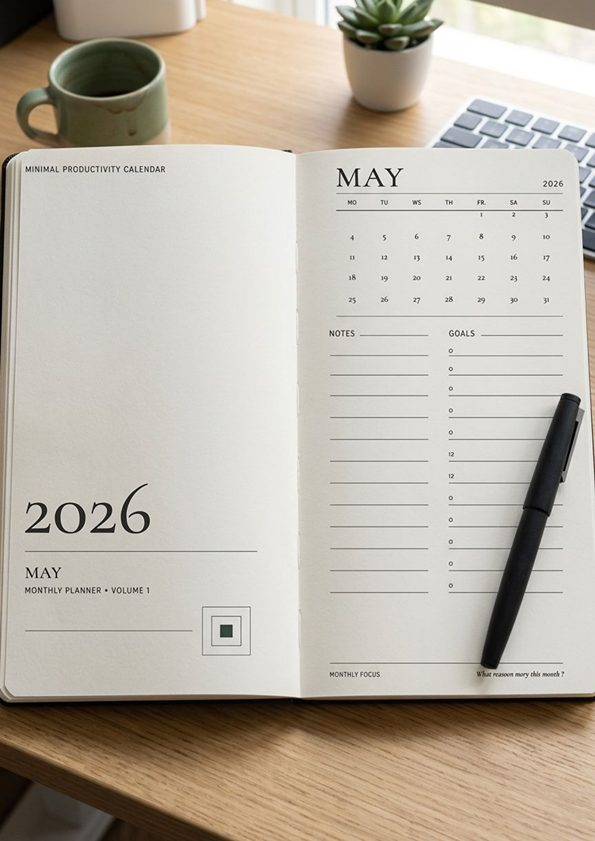
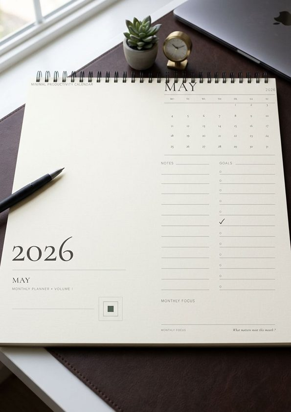
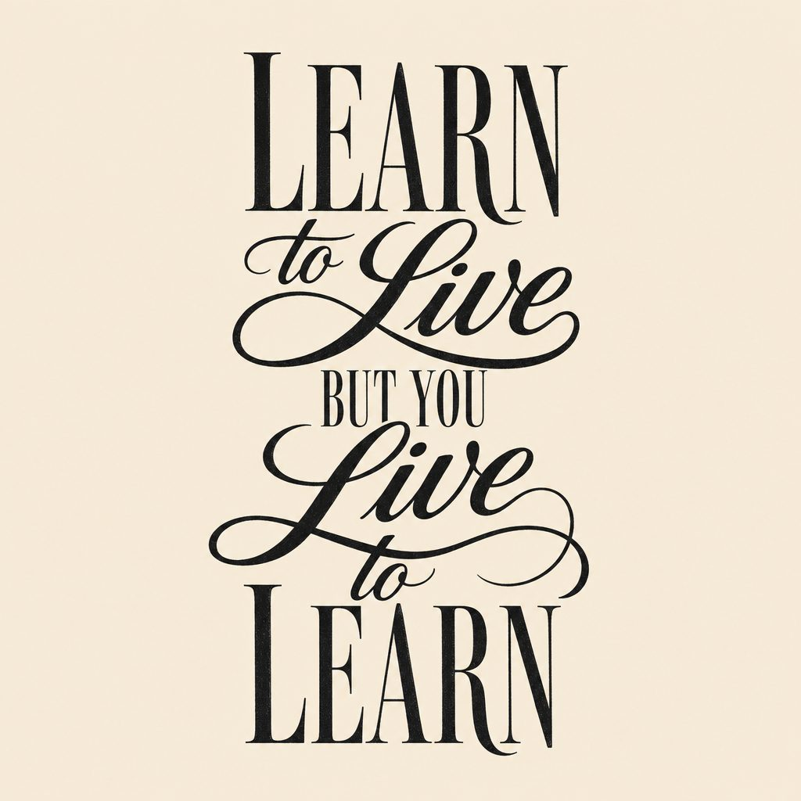
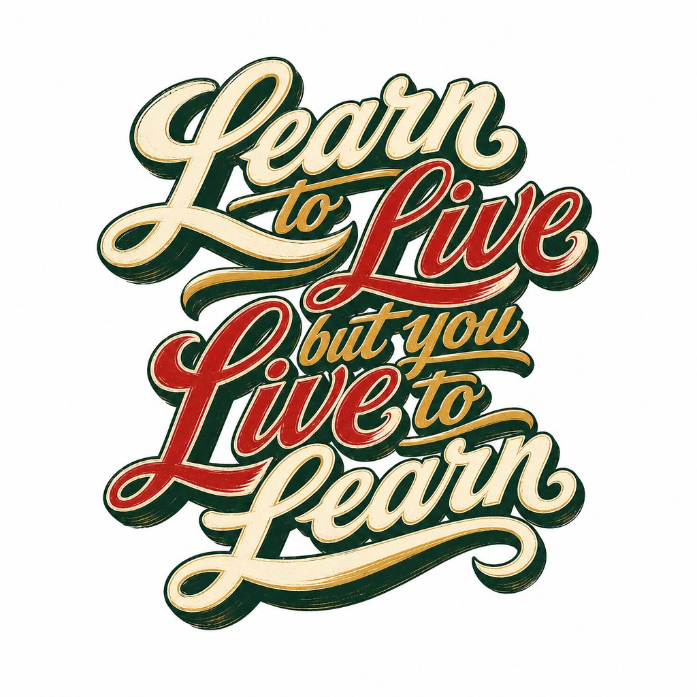
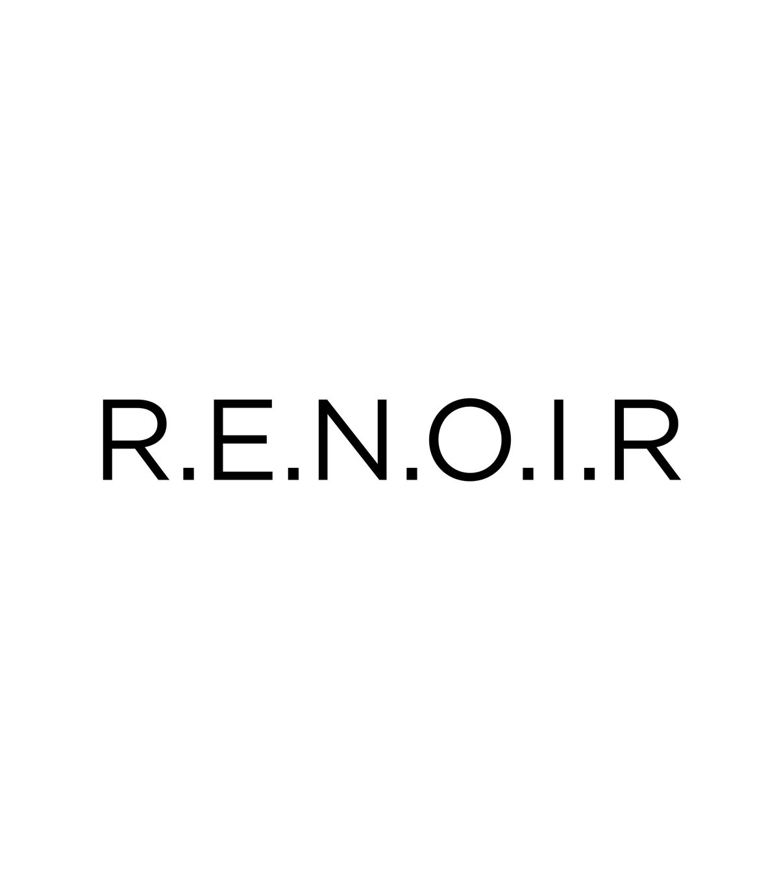
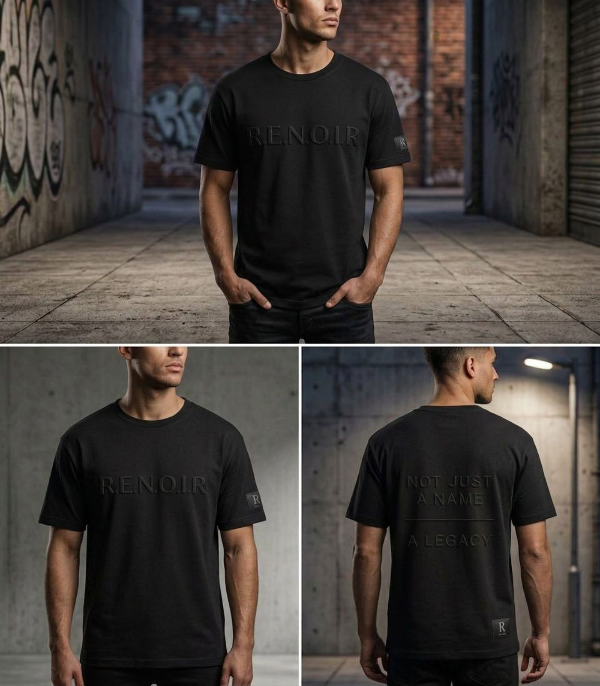
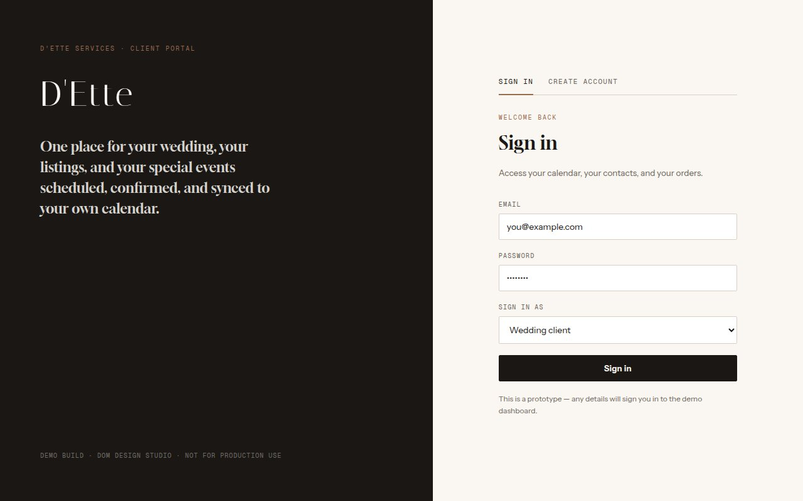
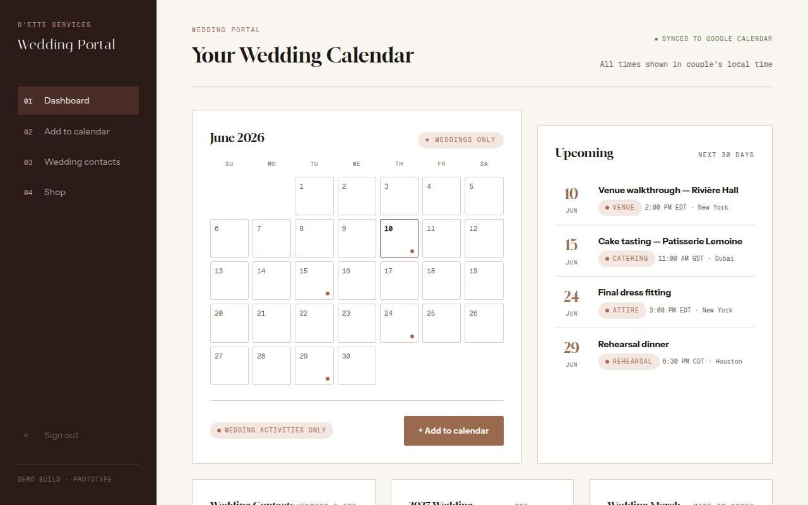
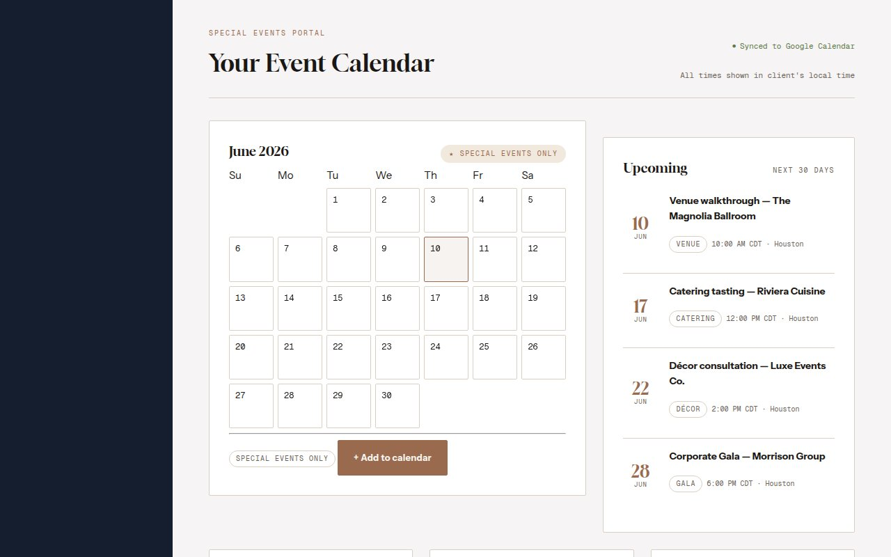

Case Study · Freelance Engagement
D'Ette Realty Project
Calendar concepts, brand exploration, and an apparel collection for a real-estate client — plus the project-management decisions, the mid-project reset, and the professional lessons that came out of an evolving brief.
Overview & my role
A multi-part freelance engagement — real-estate calendar concepts, a T-shirt and apparel collection, and brand exploration — that required as much project management as it did design.
The client came in wanting a 2027 real-estate calendar and, over the course of the project, the brief expanded into a full apparel collection, brand-standard questions, and the possibility of calendar variants for multiple companies. The work required interpreting an evolving brief, preparing concepts, estimating scope, organizing project phases, and communicating clearly as the direction shifted. The engagement was managed through Guru.com for the client agreement and financial side, and HoneyBook for internal phases, tasks, and time management.
- Interpret the client's references and verbal direction into original visual concepts — no finished template used as a shortcut.
- Build calendar models suitable for print, organizing emergency contacts, monthly content, and holiday observances.
- Maintain the client's visual identity and brand references across every version.
- Estimate and manage the work as a freelance, fixed-scope project.
- Communicate questions, revisions, and scope issues clearly and in writing.
Project phases
-
Phase 1
Logo Exploration Closed
Brand identity
The client wanted a specific visual idea that was difficult to translate from verbal description into an approved mark. After several rounds, I concluded I could not reliably deliver the logo she had in mind, and stepped away from this portion while staying available for the calendar and apparel work.
-
Phase 2
2027 Real-Estate Calendar Active
Largest scope of the engagement
Three calendar models were developed while the brief continued to evolve. The client indicated several companies could eventually need different calendar types, with real estate spanning commercial, residential, and relocation.
-
Phase 3
T-Shirt & Apparel Collection Active
Fixed-price creative project
A separate apparel scope, estimated as its own fixed-price project — software costs and production workflow factored into the estimate. Remained secondary while the calendar direction was being resolved.
-
Phase 4
Portal / Dashboard On hold
Future concept
A future client portal/dashboard idea existed but was placed on hold and never treated as an active production deliverable. A clickable static prototype was later built to show the concept — calendar dashboard, add-event flow, contacts, and a calendar/merch shop — but it was never commissioned as production work.
What the client asked for
- A master calendar established before expanding into additional versions.
- Four calendar types discussed: wall, desk, digital, and magnet calendars.
- Creative, colorful, high-definition designs — no generic template-based result.
- Real-estate versions serving different sectors: commercial, residential, relocation.
- Emergency contact information incorporated into every version.
- Correct print dimensions, plus specific holidays and observance imagery on selected dates.
- A result visually attractive enough to function as a client-facing marketing product.
The key difficulty: the visual references eventually pointed toward a marketing/content calendar rather than the conventional real-estate wall-calendar direction used in the first models — content ideas, platforms, recurring themes, and imagery integrated into individual dates. That materially changed the interpretation of the assignment partway through production.
Calendar concept design
Three calendar models were developed as the brief evolved — from a branded, information-dense structure toward a cleaner, editorial "minimal productivity" system: original typography, a real monthly grid, and dedicated notes/goals space, built for print rather than a stock template.



Apparel & T-shirt collection
The apparel scope applied the same custom-design principle as the calendar work — original typography and graphics, no stock artwork, developed for real print-ready production. Concepts ranged from typographic statement tees to a full logotype and mockup treatment for a hoodie/T-shirt line.




Portal & dashboard prototype
The client-portal idea from Phase 4 was never commissioned as production work, but I built a clickable static prototype to show the concept in a discovery call — no real login, no live calendar sync, no checkout. It demonstrates the sign-in flow, a calendar dashboard with an upcoming-events list, and a 2027 calendar/merch shop, in both a general portal layout and a special-events variant.



Status: demo build only — not for production use. A real build would require Google Calendar OAuth/API integration for live sync, and the shop section is designed to link out to Shopify rather than run its own checkout.
General portal prototype
Special-events portal prototype
Challenges & client communication
The main challenge was never the artwork itself — it was maintaining a stable design target while requirements were clarified across calls, emails, references, and messages from both the client and her assistant.
- The desired result was difficult to define from the initial brief alone.
- The client's verbal expectations and visual references did not always point to the same type of calendar.
- Scope expanded from one real-estate calendar into multiple formats and potential versions for several companies.
- Some questions had to be redirected back to the client because her assistant did not have authority over every project decision.
- Several iterations were produced before the underlying content-calendar direction became clear.
- The logo phase showed that continued revision isn't always the right call when designer and client don't share the same visual interpretation.
Closing the engagement — and what it taught me
Not every project ships to the finish line the way it started, and presenting that honestly is more useful than only showing the polished wins.
A. Why I decided to end the project
Ending the engagement was the most responsible professional decision available. It wasn't a single rejected design — the project had accumulated too much uncertainty between the original scope, later references, added deliverables, and the client's expectations. Continuing under those conditions would have meant more revision without a clear definition of what "approved" actually meant.
After comparing later references against the work already produced, it became clear the project direction had been misunderstood partway through. Rather than keep revising against a moving target, the right move was to stop, recommend a reset — review the call, compare every reference and existing model, and establish a single master brief before any further production.
There was also a mismatch between the amount of open-ended exploration the brief required and the structure of a freelance agreement. A project stays sustainable only when scope, decision-making authority, deliverables, revision limits, and approval criteria are clear enough to hold. Closing it was a project-management decision as much as a design one: protect the quality of the work, avoid an unclear production cycle, and recognize that not every designer/client relationship is the right fit.
B. What I'd improve next time
Discovery first. Run a structured kickoff before designing, and require the client to name the primary reference, audience, format, and business objective up front.
One written master brief. Consolidate every call, email, and reference into a single document and get it approved before production starts.
Define deliverables precisely. Treat wall, desk, digital, and magnet calendars as distinct deliverables, not one general assignment.
Approve structure before styling. Lock page count, content hierarchy, and required sections first — only then move into visual direction.
Use staged approvals. Moodboard/style, then wireframe, then one sample month, then the full calendar — never all at once.
Set revision limits. Define included revision rounds up front and price additional direction changes separately.
Document scope changes. New companies, formats, or content systems should trigger a written change order, not a quiet scope expansion.
Clarify decision authority. Establish upfront who can actually approve creative work when a client has an assistant or intermediary.
Recognize a mismatch earlier. Ending or pausing a project can be the correct professional call when continued production is unlikely to reach an approvable result.
The most important shift going forward: move from designing while discovering the brief to designing after the brief is approved. That single change makes freelance projects more efficient, easier to price fairly, and easier for clients to review — and it reinforced that creative persistence is valuable, but repeatedly producing work against an unstable target is not good project management.
Building something with real production discipline?
This is what a real freelance engagement looks like — concept work, project management, and the judgment to close scope that isn't working. If that's the kind of process you want on your project, let's talk.